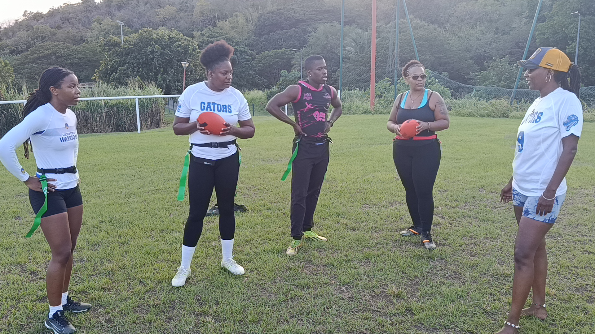

84
Centre
Bolo
Club de flag football mixte. On court, on attrape, on marque — sans contact, et dans la bonne humeur.

Né à Schœlcher en 2021. Le flag, c'est du football américain sans plaquage : on arrache un foulard à la ceinture pour stopper l'adversaire. Un jeu rapide, technique et ouvert à tout le monde — filles et gars, débutants comme confirmés.
Histoire du club
Les Iguanes se sont construits autour des entraînements locaux, des premiers collectifs, des matchs disputés en Martinique et des moments de vie qui ont soudé le club saison après saison.
L'effectif


Portraits issus de la séance Flag Football · Les Iguanes · 30 mai 2026.
Calendrier · Saison 2026
samedi 25 avril · Saint-Joseph
dimanche 3 mai · Ducos
samedi 9 mai · Osenat
dimanche 24 mai · B. Gondeau
samedi 30 mai · Schœlcher
samedi 6 juin · dimanche 7 juin · lieu à confirmer
samedi 20 juin · Le François
Source: planning de compétition partagé par l'équipe, complété avec les scores retrouvés. Les informations marquées à confirmer restent en attente.
Résultats
| # | Club | J | V | D | Diff | Pts |
|---|---|---|---|---|---|---|
| 1 | Rapaces | 5 | 5 | 0 | +149 | 15 |
| 2 | Canners | 5 | 3 | 2 | +6 | 9 |
| 3 | Gators | 5 | 2 | 3 | -109 | 6 |
| 4 | Iguanes | 5 | 0 | 5 | -46 | 0 |
Classement calculé à partir des résultats connus des weeks 1 à 5 au 2 juin 2026. La phase de groupe n'est pas encore terminée: la week 6 reste à jouer avant les finales.
Galerie
21 images retenues pour raconter le club: details, matchs, finale, communaute et celebrations.
Boutique


Commandes & tailles en message privé sur Instagram. @iguanes_footus_972
Partenaires
Entraînement
Débutant ou confirmé, fille ou gars, dès 16 ans. On prête l'équipement, les deux premières séances sont offertes.
Mardi ou jeudi, présente-toi 15 min avant.
Deux séances découverte, sans engagement.
Licence + adhésion, et bienvenue dans la famille.
Contact